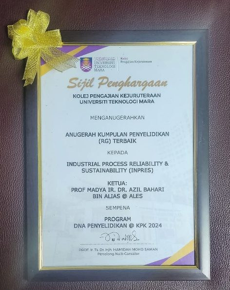

Who we are
About INPRES
Industrial Process Reliability & Sustainability: a UiTM Centre of Excellence (Entiti Kecemerlangan) at the Faculty of Chemical Engineering, Shah Alam.
Our story
Built where industry needs it most
INPRES was founded in 2019 by Assoc. Prof. Ir. Dr. Azil Bahari Alias and registered as a UiTM Entiti Kecemerlangan at Tier 4 (code CoRe1/T4/2019(1)/FMIA(1)). It brings together chemical engineers who share one belief: that the reliability of an industrial plant and its sustainability are the same problem seen from two sides.
The group has been rated five-star in every assessment from 2019 to 2024, and was named Best Research Group at DNA Penyelidikan @ KPK 2024, UiTM College of Engineering, where its head also received the Most Publications Award.
Its members are trusted by industry: they prepare CIMAH safety reports for major hazard installations across Malaysia, analyse corrosion for refineries and pipelines, and validate processes for chemical, glove, oleochemical and energy companies.

Synopsis
Two pillars, four disciplines
- Sustainability
- Environmental engineering · Process system engineering
- Reliability
- Process safety & risk reliability engineering · Corrosion engineering
- Expertise
- Waste to wealth, pollution control, energy, adsorption, facility siting, quantitative risk analysis, inherent safety, oil and gas pipeline corrosion, top-of-line corrosion, corrosion inhibitors, process design, operation and optimisation
- Applications
- Oil and gas, industrial and environmental processes, waste treatment, safety for major hazard installations (CIMAH), hazardous area classification
Sustainable Development Goals
Where our work lands
INPRES research maps to seven UN Sustainable Development Goals.
Affiliated centre
Industrial Corrosion Research Centre (InCORE)
INPRES member Assoc. Prof. Ir. Dr. Najmiddin Yaakob works with UiTM’s Industrial Corrosion Research Centre on pipeline and coupon corrosion for PETRONAS, refiners and international partners such as Rohrback Cosasco Systems UK.
How we work
What makes INPRES different
Plant-tested
Research questions come from real sites: terminals, refineries, glove factories and mills. Answers go back to them.
Professionally accountable
All seven core members are registered Professional Engineers with the Board of Engineers Malaysia.
Whole-plant team
Safety, corrosion, separation, catalysis and environment under one roof, so problems are not passed between silos.